<header class="header header--product">
    {% include navigation.html %}

    <div class="header__content product__header">
        <h1 class="page__title">Gérer & valoriser<small>les randonnées et activités touristiques de votre territoire</small></h1>
        <div class="product__cards grid grid--center">
            <div class="product__cards__item grid__item">
                
                <h2 class="title product__header__title">Geotrek-admin</h2>
                <h3 class="title title--min product__header__subtitle">Application pour les&nbsp;gestionnaires</h3>
                <p class="product__header__desc">Saisie et mise à jour des données cartographiques et descriptives</p>
                <a href="#admin" class="button button--medium button--orange">En savoir plus</a>
            </div>
            <div class="product__cards__item grid__item">
                
                <h2 class="title product__header__title">Geotrek-rando</h2>
                <h3 class="title title--min product__header__subtitle">Le site internet tout&nbsp;public</h3>
                <p class="product__header__desc">Valorisation du patrimoine, ses randonnées, ses évènements et ses activités</p>
                <a href="#rando" class="button button--medium button--turquoise">En savoir plus</a>
            </div>
            <div class="product__cards__item grid__item">
                
                <h2 class="title product__header__title">Geotrek-widget</h2>
                <h3 class="title title--min product__header__subtitle">Composant web intéractif</h3>
                <p class="product__header__desc">Diffuse sur des sites tiers les contenus saisis dans le back-office Geotrek-admin</p>
                <a href="#widget" class="button button--medium button--jaune">En savoir plus</a>
            </div>
            <div class="product__cards__item grid__item">
                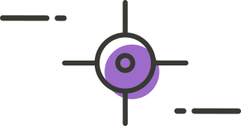
                <h2 class="title product__header__title">Geotrek-mobile</h2>
                <h3 class="title title--min product__header__subtitle">Application mobile</h3>
                <p class="product__header__desc">Accessible smartphone et tablette, mode connecté et déconnecté, Android et iOS</p>
                <a href="#mobile" class="button button--medium button--violet">En savoir plus</a>
            </div>
        </div>
    </div>
</header>

<section class="product__section">
    <a name="admin"></a>
    <header class="product__section__header">
        <h2 class="title product__section__title">Geotrek-admin</h2>
        <h3 class="title title--min product__section__subtitle">Application pour les&nbsp;gestionnaires</h3>
    </header>
    <div class="grid product__content">
        <div class="grid__item grid__item--70">
            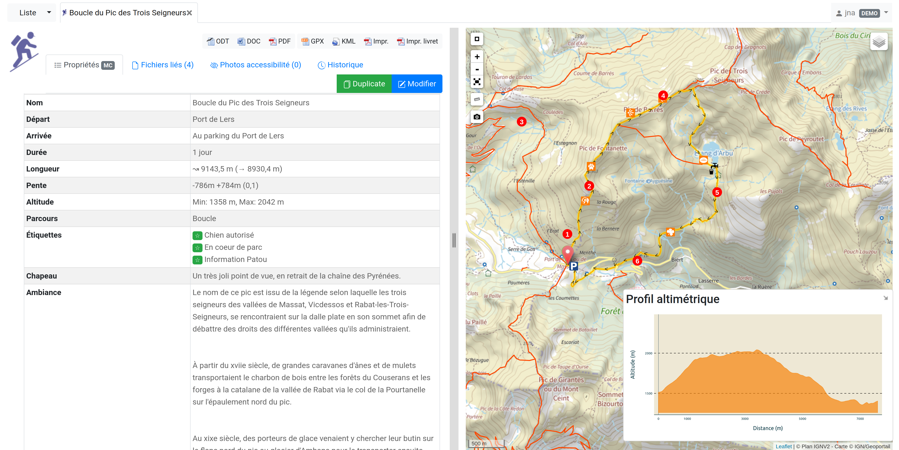
        </div>

        <div class="grid__item grid__item--30">
            <h4 class="title title--medium title--medium-orange">Modules fonctionnels et gestion efficace avec les tronçons comme référentiel commun</h4>
            <a href="https://geotrek.readthedocs.io/" class="button button--small button--orange" target="_blank">Documentation</a>
            <p>Application métier proposant des fonctionnalités SIG, Geotrek-admin permet de dessiner et de gérer les linéaires de randonnées, avec les tronçons et les réseaux topologiques.</p>
            <p>À travers ses modules fonctionnels et grâce à la segmentation dynamique, il est possible d'enrichir la base de données Geotrek avec des objets de type signalétiques, POI, travaux... et de renseigner les activités touristiques du territoire tels que les activités de pleine nature, festivals, expositions, hébergements...</p>
            <p>Il est possible d’intégrer les renseignements issus des Systèmes d'Information Touristiques et de réaliser des imports - exports des données géographiques.
            </p>
            <ul class="features features--orange">
                <li class="features__item">
                    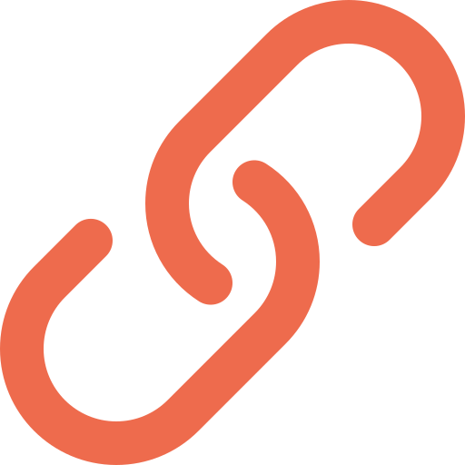
                    Lien avec les S.I.T
                </li>
                <li class="features__item">
                    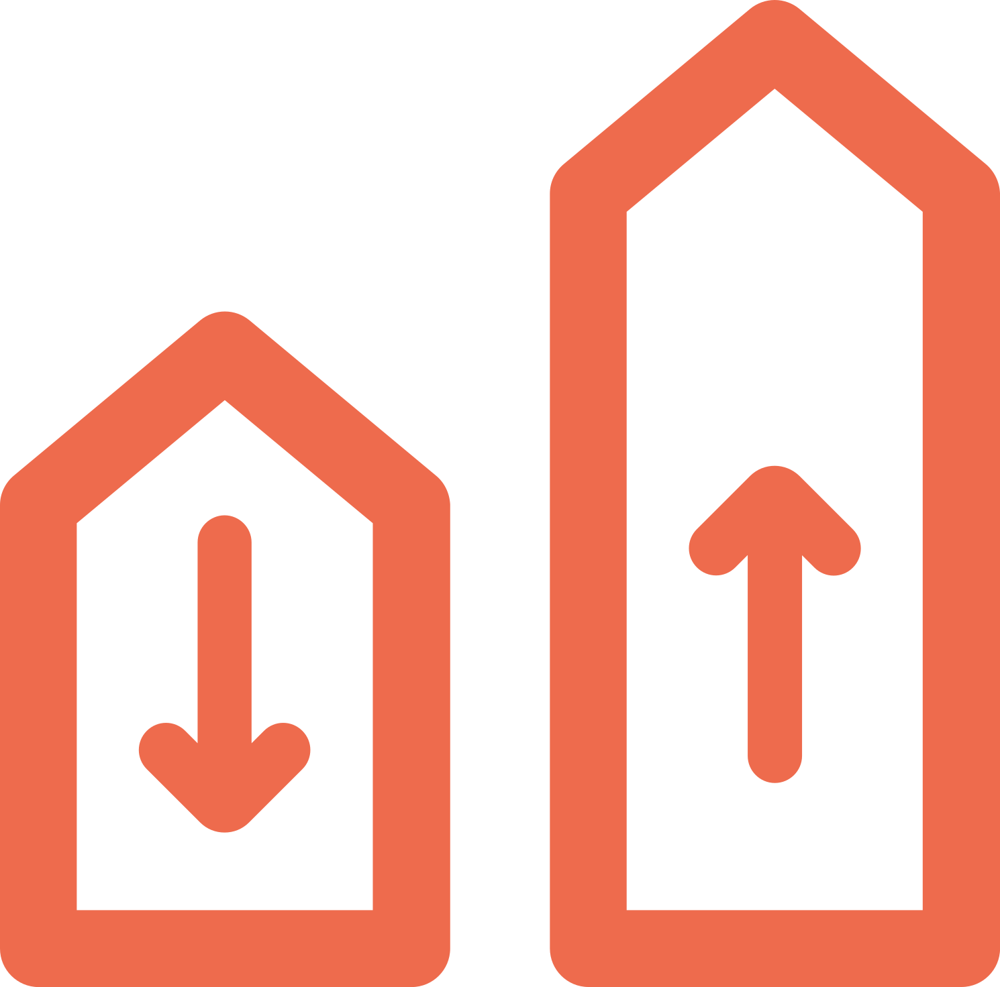
                    Import / export de données
                </li>
                <li class="features__item">
                    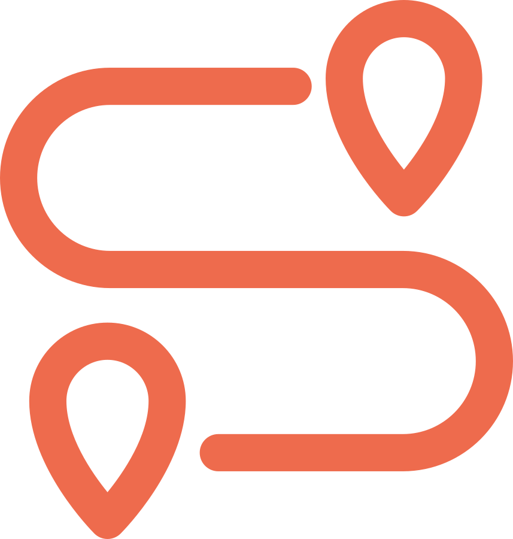
                    Segmentation dynamique
                </li>
                <li class="features__item">
                    
                    Calculs altimétriques
                </li>
            </ul>
        </div>
    </div>
</section>

<section class="product__section">
    <a name="rando"></a>
    <header class="product__section__header">
        <h2 class="title product__section__title">Geotrek-rando</h2>
        <h3 class="title title--min product__section__subtitle">Le site internet tout&nbsp;public</h3>
    </header>
    <div class="grid product__content">
        <div class="grid__item grid__item--70">
            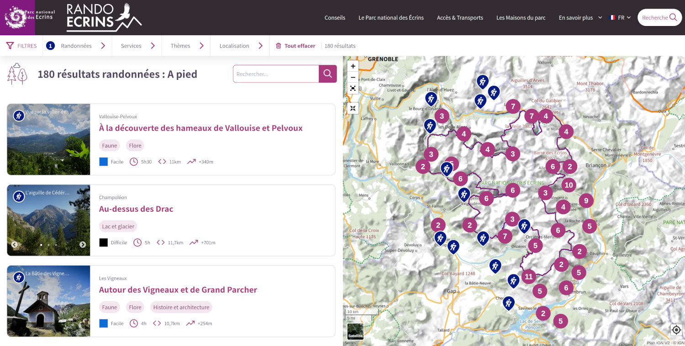
        </div>

        <div class="grid__item grid__item--30">
            <h4 class="title title--medium title--medium-turquoise">Un véritable topoguide numérique<br/>pour vos utilisateurs</h4>
            <a href="https://rando.ecrins-parcnational.fr/" class="button button--small button--turquoise" target="_blank">Exemple d'utilisation</a>
            <a href="https://github.com/GeotrekCE/Geotrek-rando-v3/blob/main/docs/presentation-fr.md" class="button button--small button--turquoise" target="_blank">Documentation</a>
            <p>À destination du grand public, le site Geotrek-rando permet la promotion du territoire grâce à la publication des informations saisies dans Geotrek-admin. La plateforme met en valeur l'ensemble des informations du territoire ainsi que les acteurs du tourisme locaux.</p>
            <p>À travers une recherche ciblée, l’utilisateur retrouve l’ensemble des informations sur les randonnées, activités de pleine nature, patrimoine, évènements, hébergements, restaurants…</p>
            <p>Propice à l'itinérance, le portail web facilite la préparation d’une randonnée dans les meilleures conditions : conseils, textes descriptifs, illustrations, topoguides.</p>
            <ul class="features features--turquoise">
                <li class="features__item">
                    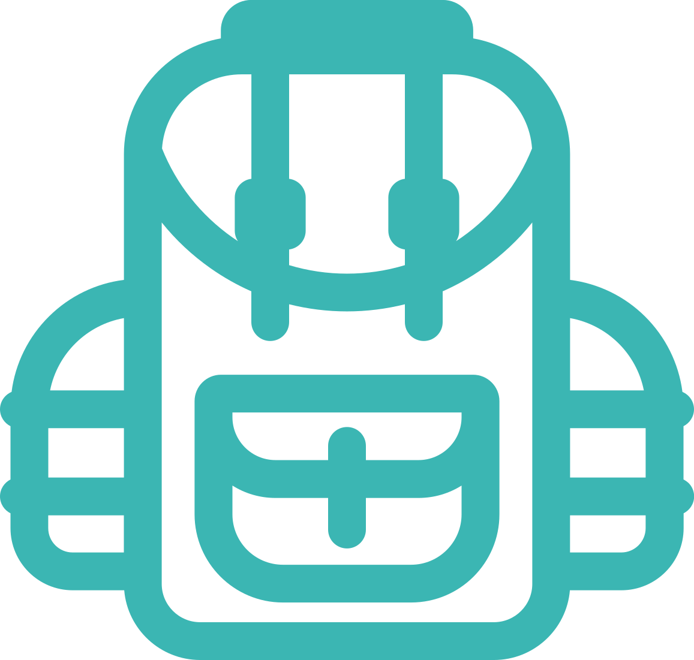
                    Itinérance
                </li>
                <li class="features__item">
                    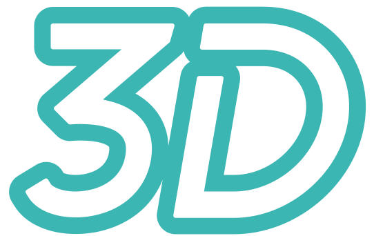
                    Représentation 3D des parcours
                </li>
                <li class="features__item">
                    
                    Navigation dans des images ultra HD
                </li>
                <li class="features__item">
                    
                    Une plateforme à votre image
                </li>
            </ul>
        </div>
    </div>
</section>

<section class="product__section">
    <a name="widget"></a>
    <header class="product__section__header">
        <h2 class="title product__section__title">Geotrek-widget</h2>
        <h3 class="title title--min product__section__subtitle">Composant web intéractif</h3>
    </header>
    <div class="grid product__content">
        <div class="grid__item grid__item--70">
            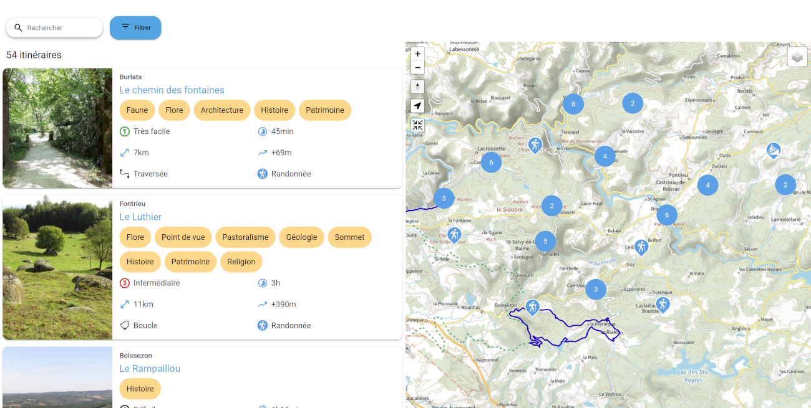
        </div>

        <div class="grid__item grid__item--30">
            <h4 class="title title--medium title--medium-jaune">Composant web de promotion <br/>du territoire</h4>
            <a href="https://sidobre-vallees-tourisme.com/type_activite/balades-et-randonnees-sidobre-vallees/" class="button button--small button--jaune" target="_blank">Exemple d'utilisation</a>
            <a href="https://geotrek-rando-widget.readthedocs.io/latest/documentation/introduction/overview.html" class="button button--small button--jaune" target="_blank">Documentation</a>
            <p>Geotrek-widget est un composant web responsive, adaptable à tous les écrans, et facilement intégrable sur les sites existants. Il peut être personnalisé pour s'harmoniser avec la charte graphique en place et offre des filtres avancés pour une recherche simplifiée.</p>
            <p>Il met en avant la promotion des pratiques sportives comme le plein air et les activités nautiques, tout en facilitant la gestion de l'itinérance et en sensibilisant aux zones de préservation environnementale, favorisant ainsi une approche inclusive du tourisme.</p>
            <p>De plus, il permet la découverte du patrimoine naturel et culturel, des événements et du territoire, tout en fournissant des informations pratiques sur les restaurants et les hébergements. Enfin, il valorise les acteurs touristiques locaux tels que les producteurs et les artisans.</p>
            <ul class="features features--jaune">
                <li class="features__item">
                    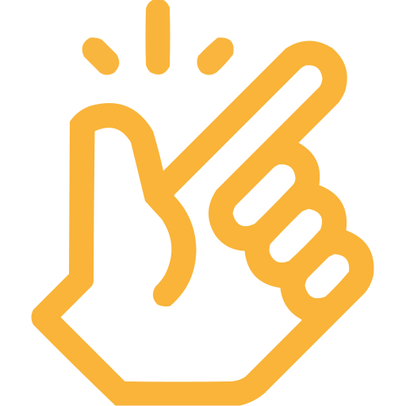
                    Facilement intégrable
                </li>
                <li class="features__item">
                    
                    Responsive design
                </li>
                <li class="features__item">
                    
                    Personnalisable
                </li>
                <li class="features__item">
                    
                    Polyvalent
                </li>
            </ul>
        </div>
    </div>
</section>

<section class="product__section">
    <a name="mobile"></a>
    <header class="product__section__header">
        <h2 class="title product__section__title">Geotrek mobile</h2>
        <h3 class="title title--min product__section__subtitle">Une application hors&nbsp;connexion</h3>
    </header>
    <div class="grid product__content">
        <div class="grid__item grid__item--70">
            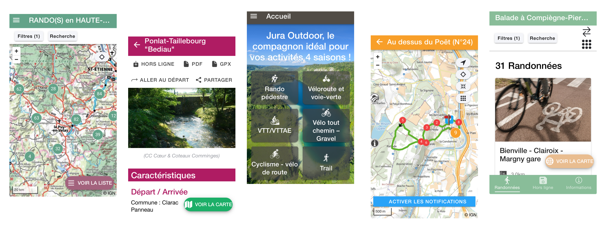
        </div>

        <div class="grid__item grid__item--30">
            <h4 class="title title--medium title--medium-violet">Explorer et se repérer sur le territoire</h4>
            <a href="https://play.google.com/store/apps/details?id=io.geotrek.hauteloire" class="button button--small button--violet" target="_blank">Exemple d'utilisation</a>
            <a href="https://github.com/GeotrekCE/Geotrek-mobile/blob/main/README.md" class="button button--small button--violet" target="_blank">Documentation</a>
            <p>Intuitive et ergonomique, Geotrek-mobile donne accès à toutes les informations du terrain, avec ou sans connexion internet.</p>
            <p>Pour les familles comme pour les sportifs, l'outil propose de filtrer les itinéraires en fonction de la position de l'utilisateur et de critères variés (durée, difficulté, dénivelé…). D’autres fonctionnalités sont également disponibles comme les alertes GPS, la visualisation de la carte dynamique des itinéraires (départ et arrivée, tracé, POI…). etc.</p>
            <p>Disponible sur Android et iOS, cette application mobile reprend une grande partie des données de Geotrek&#x2011;Rando.</p>
            <ul class="features features--violet">
                <li class="features__item">
                    
                    Mode connecté / déconnecté
                </li>
                <li class="features__item">
                    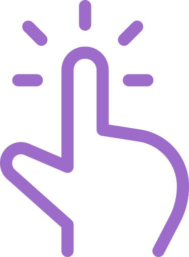
                    Randonnée interactive
                </li>
                <li class="features__item">
                    
                    Alertes GPS
                </li>
                <li class="features__item">
                    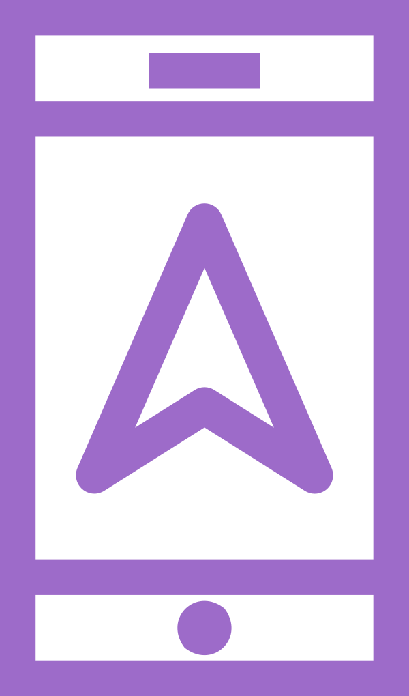
                    Android et iOS
                </li>
            </ul>
        </div>
    </div>
</section>

<section class="grid contact__banner">
    <h3 class="contact__banner__text">Envie de créer votre Geotrek&nbsp;?</h3>
    <a href="contact.html" class="button">Nous contacter</a>
</section>

<section class="open-source">
    <h2 class="title title--light">Une philosophie Open Source</h2>
    <div class="grid">
        <div class="grid__item grid__item--33">
            <h3 class="title title--medium">Un logiciel libre</h3>
            <p>Geotrek est un logiciel libre dont le code source est disponible sur Github. Soumis à l’étude, la critique et la correction de plusieurs contributeurs, la suite logicielle bénéficie d’une maintenance régulière qui garantit un ensemble d'outils de qualité.</p>
        </div>
        <div class="grid__item grid__item--33">
            <h3 class="title title--medium">Modifiable par tous</h3>
            <p>Documenté et délivré sous une licence open source BSD, Geotrek peut être installé et modifié par son utilisateur sans dépendre d’un prestataire. Les prestations éventuelles concernent le développement, l’intégration des données, la formation ou la maintenance.</p>
        </div>
        <div class="grid__item grid__item--33">
            <h3 class="title title--medium">Et collaboratif</h3>
            <p>Indépendance, collaboration et entraide, l’esprit du logiciel libre appuie cette volonté de rendre le progrès de la connaissance accessible à tous. Ainsi, la communauté Geotrek grandit chaque jour depuis sa création.</p>
        </div>
    </div>
</section>
